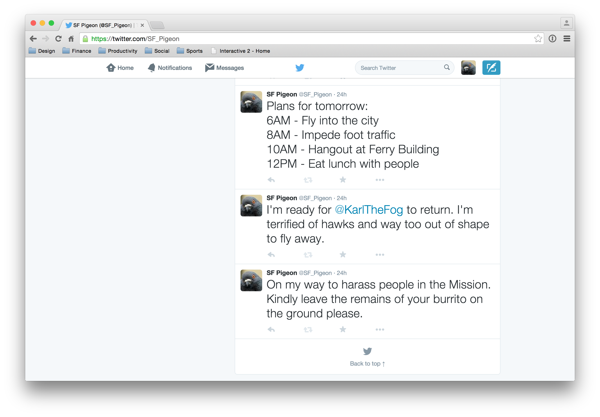
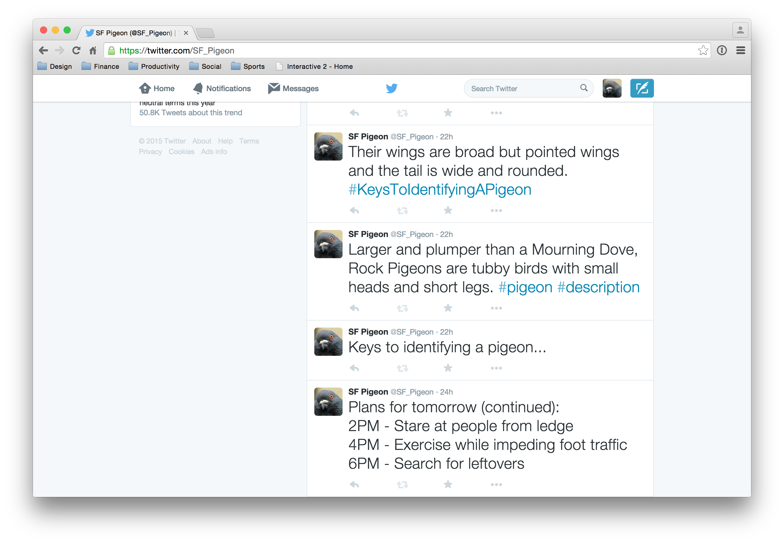
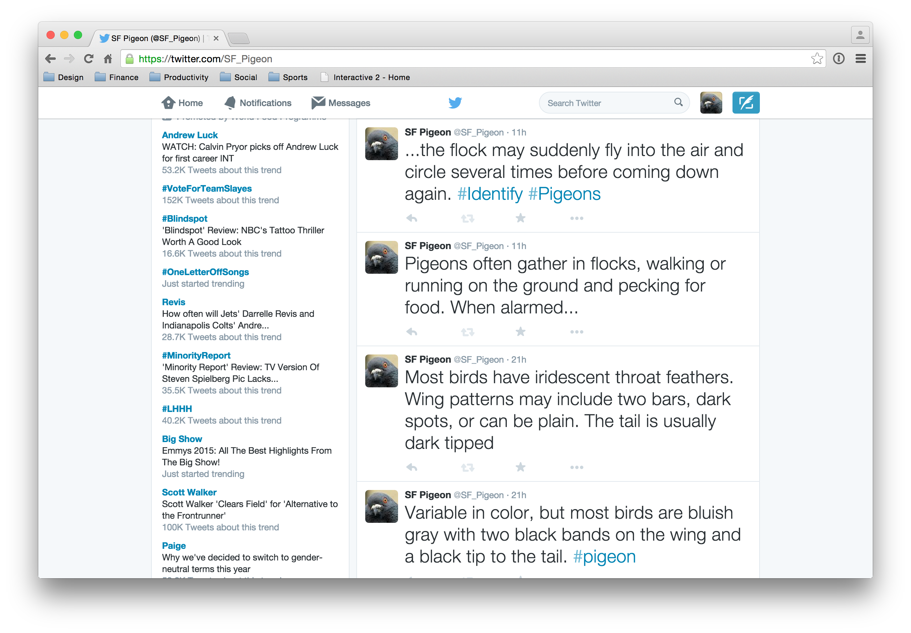
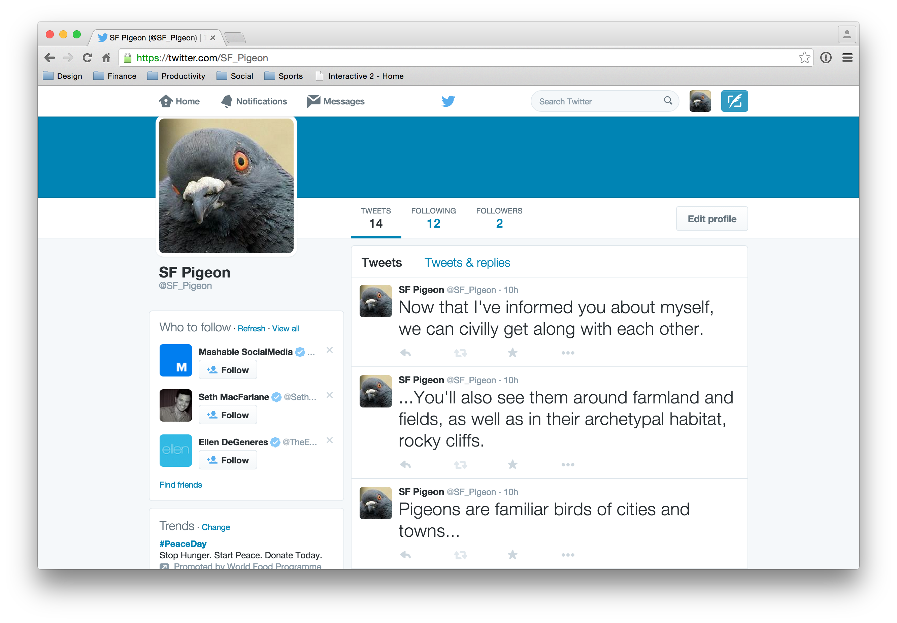

I chose to create a Twitter account for the San Francisco pigeon. A character identity was assigned to a pigeon who speaks randomly through 140-character posts to the platform. The chosen text came from http://bit.ly/1FZDutX. There, excerpts were taken from the identification portion of the page and divided into bite sized posts. I also added my own text to before and after the inserted text to add a bit of context to the spoken dialogue—creating a story. Each peice of text was posted at different intervals of time to keep readers engaged. Below are screenshots of the experiment.
   